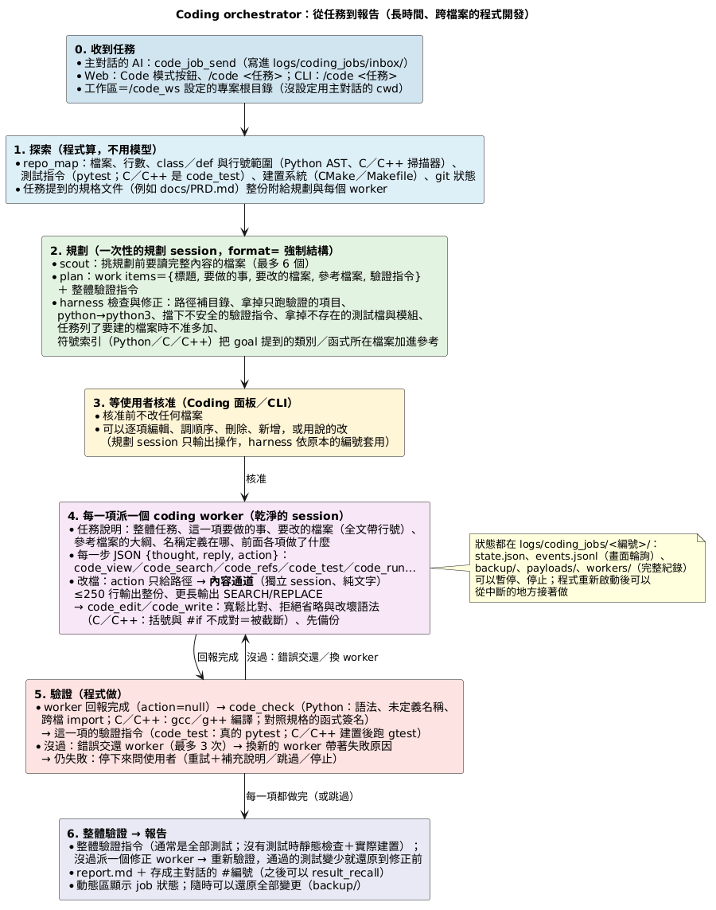
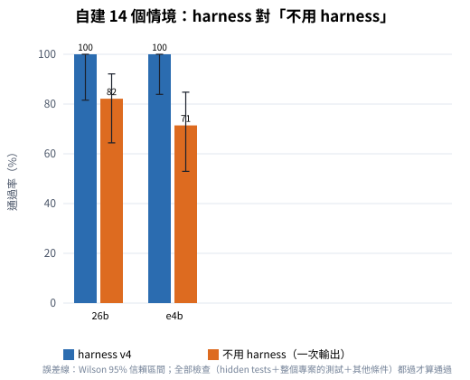
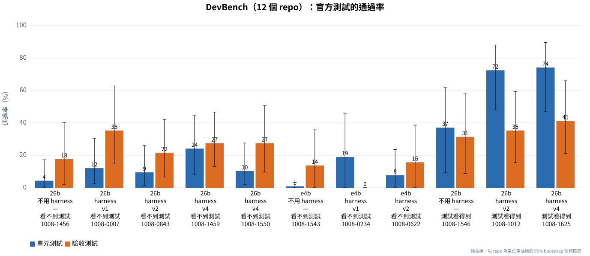
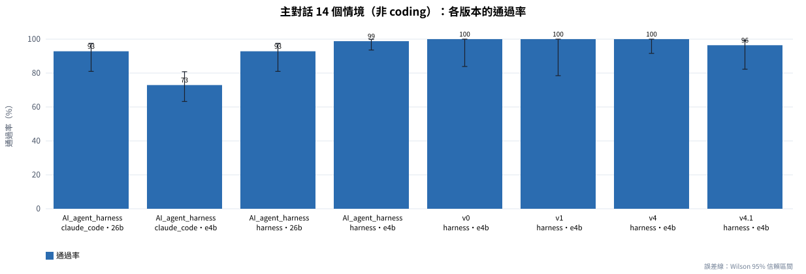
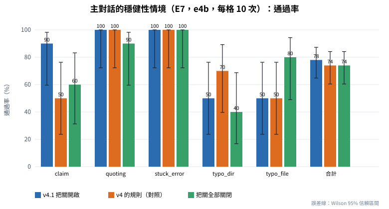
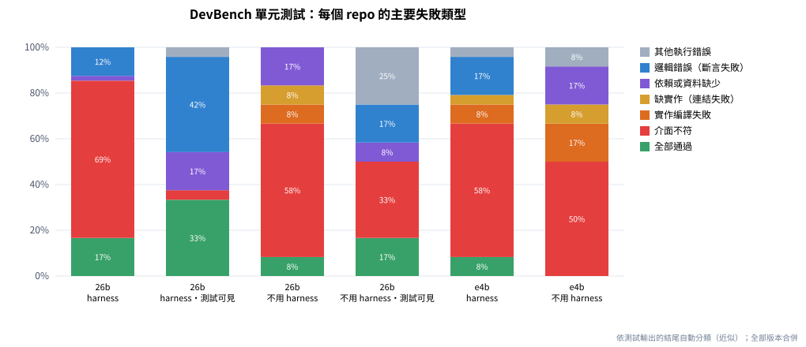

Coding_agent_harness 從機器人維運用的 AI_agent_harness 延伸而來：主對話保留原本的技能系統與上下文管理，另外加上一個 coding orchestrator——先探索專案、列出計畫，使用者核准後派 coding worker 一項一項修改，每一項由程式驗證（語法、跨檔 import、C／C++ 編譯、真的 pytest 與 GoogleTest），失敗就交還、換 worker、停下來問人，最後跑整體驗證並產生報告。所有決策都用本機的小型模型。
小模型直接拿來改多檔案的專案並不可靠：會漏改呼叫端、寫錯測試、把錯誤的寫法輸出成看起來正確的程式碼、或宣稱做完卻什麼都沒做。harness 的假設是：把「確認對不對」交給程式（編譯器、測試、靜態檢查），讓模型只負責「提出修改」，小模型也能完成大部分日常的修改工作。這份報告檢驗這個假設在哪些範圍成立、在哪些範圍不成立。
早期的基準（HumanEval、APPS）只要求寫出單一函式。SWE-bench [3] 改用真實 GitHub issue：給 repo 與 issue，要產生能讓隱藏測試通過的修改；每題要一個 Docker 環境，Epoch AI [8] 把全部 2290 題的映像最佳化後仍有 67 GiB（Verified 的 500 題 30 GiB），而且以 Python 為主。SWE-bench Multilingual [9] 有 300 題、42 個 repo、9 種語言（含 C／C++），同樣每題一個 Docker 容器。Aider polyglot [7] 選了 Exercism 最難的 225 題（C++、Go、Java、JavaScript、Python、Rust；其中 Python 34 題、C++ 26 題），是單一練習題的規模。
長任務方面，DevBench [1][2] 把軟體開發拆成設計、環境設定、實作、驗收測試、單元測試；「實作」任務只給 PRD、UML 與架構設計，從零寫出整個 repo，用官方的單元與驗收測試計分。DevEval 的公開結果中，GPT-4-Turbo-0125 的實作任務驗收測試通過率 7.1%、單元測試 8.0%（22 個 repo、四種語言、依程式碼行數加權）[2]。NL2Repo-Bench [6] 只給一份需求文件與空的工作區，要做出可安裝的 Python 函式庫；論文報告最強的 agent 平均測試通過率也低於 40%，失敗模式包括提早結束、失去全域一致性、跨檔依賴脆弱、規劃不足。
SWE-agent [4] 提出「agent-computer interface」：為模型設計專用的檔案檢視、搜尋、編輯工具（編輯時做語法檢查、輸出精簡），比直接給 shell 更有效。本 harness 的技能是同一個想法：repo_map、code_view、code_refs、code_edit（寬鬆比對、拒絕省略與改壞語法）、code_test（通過／失敗數由腳本算好）等，回傳第一行固定是 [PASS]／[ERROR]。DevBench 的基準 agent 是從 ChatDev [5]（多個角色對話的軟體開發 agent）改的。
這台機器的條件是：單一 GPU（同時跑 Isaac Sim）、沒有 Docker 評測環境、要同時涵蓋 Python 與 C／C++、要用真的 pytest／gtest。DevBench 的實作任務剛好符合：每個 repo 只有幾十 KB、官方測試就是 pytest 與 GoogleTest、不需要容器。我們選了 12 個可以在這個環境穩定計分的 repo（排除參考實作本身就有測試失敗的、要連網站的、要 GPU 訓練的、Java／JavaScript 的），用參考實作驗證計分：單元 116/116、驗收 51/51 全部通過。
DevBench 量的是「從零寫出整個專案」，不是最常見的工作。日常更常見的是「在既有、有測試的專案裡修改」，所以另外建了 14 個情境，包含使用者實際會遇到的 ROS 2 colcon 工作區（這台主機沒有 ROS 2）。
agent_core/、web_app/）：固定的 JSON 回覆協議（thought、reply、action，只有 action 會被執行）、技能索引＋按需載入的規格（兩階段揭露）、工具回傳存檔與回查、上下文壓縮、執行前確認、記憶、Plan 模式。42 份技能規格、41 支腳本。agent_core/coding_*.py）：背景服務，一次一個 job，狀態全部寫在檔案裡（程式重新啟動可以接著做）。程式規模：agent_core 約 7,300 行、技能腳本約 8,800 行。
repo_map 算出專案地圖（檔案、行數、類別與函式的行號、測試指令、建置系統；ROS 2 工作區列出套件）。code_check（Python 的語法、未定義名稱、跨檔 import；C／C++ 用 gcc／g++ 編譯；任務附規格文件時對照函式簽名）＋這一項的驗證指令。沒過就交還；同一項最多 2 個 worker；同一個錯誤第三次就判定卡住。code_test 一律用真的工具：Python 用專案的直譯器跑 pytest；C／C++ 依序找 CMake 註冊的測試（cmake→建置→ctest）、Makefile 的 test 目標、或直接用 g++ 編譯並連結 gtest。輸出由腳本整理：通過／失敗數、assert 的實際值、gtest 的期望值與實際值、編譯錯誤的「檔案:行號」與那一行原始碼。「沒有測試可跑」與「測試失敗」分得開（否則 worker 會去修不存在的問題）。工具鏈不需要 sudo（datasets/toolchain/）。
C／C++ 用只靠標準庫的輕量掃描器產生結構大綱與名稱索引（這台機器沒有 clang），正確性一律交給編譯器。ROS 2 的 colcon 工作區在沒有 ROS 2 的主機上：每個檔案依所屬套件決定 include 目錄；缺的標頭如果是 package.xml／CMake 宣告的外部依賴、或建置時才產生的（ROS 2 介面、CMake 產生的檔案），只做結構檢查並說明「不是程式的錯誤」；code_test 每個套件分開跑，需要 rclcpp／rclpy 的測試跳過並說明。
view_file／list_dir／change_dir／code_view 找不到路徑時，列出相近的路徑。docker_runcmd 的誤用提示：被拿來跑 docker start 之類的 docker CLI 時，直接說明要用 host_runcmd。gemma4:e4b 與 gemma4:26b（Ollama，本機）；NVIDIA RTX 5090（32 GB，同時有 Isaac Sim 佔約 7 GB）。harness 的模型參數：num_ctx 32768；worker 的決定 temperature 0.2～0.3、內容通道 0.2；不用 harness 的對照組用跟內容通道一樣的參數。e4b 是主對話預設的模型，26b 是建議給 coding job 的模型。
| 代號 | 基準 | 規模 | 計分 |
|---|---|---|---|
| B1 | 自建 coding 情境（datasets/custom_coding_scenarios/） | 14 個：Python 6（新增方法＋改行為、跨檔改名＋CLI、照使用範例的多檔功能、除錯不能改測試、照規格建新模組、5 個檔案的長任務）、C／C++ 5（CMake＋gtest、Makefile＋gtest）、ROS 2 3（ament_cmake 與 ament_python 套件，主機沒有 ROS 2） | 全部檢查都成立才算通過：hidden tests（agent 看不到）、整個專案的測試、不准改的檔案、改名後舊名稱不能出現、檔案內容條件 |
| B2 | DevBench 實作任務子集（datasets/devbench_subset/） | 12 個 repo（Python 7、C++ 5，160～670 行），單元測試 116 個、驗收測試 51 個 | 官方測試換回原本的版本後計分：通過的測試數÷總數 |
| B3 | 主對話情境（datasets/main_session_scenarios/） | 14 個機器人維運情境（容器、ROS 2、調度系統、存檔回查、記憶、coding 路由；外部世界用假資料） | 每一句使用者訊息的條件（回覆內容、用了哪些工具、沒用哪些工具、有沒有經過確認…） |
| B4 | 主對話的穩健性情境 | 5 個：檔名大小寫打錯、目錄名稱少一個字、要讀的檔案不存在、要求重新啟動容器、指令裡有引號與分號 | 同上，另外記錄主模型呼叫次數、重複的工具呼叫、撞到步數上限、卡住偵測停下的次數 |
__init__.py、makefile）；程式在 evals/devbench/bare.py。B1：把任務與專案全部檔案的內容給模型，一次輸出所有要新增或修改的檔案（evals/bare_coding_baseline.py）。這代表「把專案貼進聊天視窗請模型改」的做法。code_test 執行（DevBench 基準 agent 的設定）；對照組把測試的內容放進提示（看得到、不能執行）。AGENT_ABLATE=turn_guard,path_suggest,rejoin[,docker_hint] 關掉第 3.5 節的把關；AGENT_TURN_GUARD_RULE=v4 換回 v4 的卡住規則（只給評測用）。| 版本 | 時間 | 內容 |
|---|---|---|
| v0 | 2026-10-07 | 第一版 coding orchestrator（只有 Python、內建的測試 runner） |
| v1 | 2026-10-08 凌晨 | C／C++、真的 pytest／gtest、規格文件整份給 worker 並對照簽名、計畫的程式修正 |
| v2 | 2026-10-08 清晨 | DevBench 找到的修正：任務清單的檔案進計畫、worker 不能新建清單外的檔案、指令的引號、物件檔清理 |
| v3 | 2026-10-08 上午 | 整體修正讓通過的測試變少就還原 |
| v4 | 2026-10-08 14:37 | ROS 2 工作區、.gitignore、套件內相對路徑的防呆、-iquote、評測用的對照開關（artifacts/ 有快照） |
| v4.1 | 2026-10-08 19:54 | 卡住偵測第 4 次才停（第 3 次加強提醒）、docker_runcmd 誤用時的提示（artifacts/ 有快照） |
analysis/），從原始紀錄（results/raw/）重新算出全部表格與圖。| 代號 | 內容 | 條件與次數 |
|---|---|---|
| E1 | DevBench（官方測試看不到）、harness | e4b v1、v2 各 1 次；26b v1、v2 各 1 次、v4 2 次 |
| E2 | DevBench（看不到）、不用 harness | e4b、26b 各 1 次 |
| E3 | DevBench（官方測試看得到） | harness 26b v2、v4 各 1 次；不用 harness 26b 1 次 |
| E4 | 自建 14 個情境 | harness：各版本（v4：e4b 20 次、26b 17 次）；不用 harness：e4b、26b 各 28 次（每個情境 2 次） |
| E5 | 主對話 14 個情境（回歸） | 各版本；v4 42 次（3 輪）；v4.1 28 次（2 輪） |
| E6 | 穩健性 5 個情境（v4） | 把關開、關各 15 次 |
| E7 | 穩健性 5 個情境（v4.1） | v4.1、v4 的規則、全部關閉，各 50 次 |
表 1 是 v4 的結果（ROS 2 的 3 個情境多跑了幾次，所以次數不是 14 的倍數）。harness 在兩個模型上都通過了全部的執行（e4b 20/20、26b 17/17）。不用 harness 的對照組（每個情境 2 次）：e4b 20/28（71.4%）、26b 23/28（82.1%）。以情境配對：e4b 有 6 個情境 harness 較好、0 個較差（符號檢定 p＝0.031），26b 是 3 比 0（p＝0.25，樣本不足以下結論）。
表 1 自建 14 個情境（v4）：harness 與不用 harness
| 模型 | 條件 | 通過（全部檢查） | 通過率 [Wilson 95% CI] | hidden tests 通過 | 平均秒數 | 平均模型呼叫 |
|---|---|---|---|---|---|---|
| gemma4:e4b | harness | 20/20 | 100.0% [83.9, 100.0] | 19/19（100%） | 33 | 25 |
| gemma4:e4b | 不用 harness | 20/28 | 71.4% [52.9, 84.7] | 25/26（96.2%） | 5 | 1 |
| gemma4:26b | harness | 17/17 | 100.0% [81.6, 100.0] | 16/16（100%） | 27 | 19 |
| gemma4:26b | 不用 harness | 23/28 | 82.1% [64.4, 92.1] | 24/26（92.3%） | 5 | 1 |
（hidden tests 的次數比較少，是因為「除錯、不能改測試」的情境沒有 hidden tests，只檢查不准改的檔案與整個專案的測試。每個情境的結果在附錄 B。）

失敗的類型比通過率更重要。只看 hidden tests（功能本身對不對），對照組其實很高：e4b 25/26、26b 24/26。對照組的失敗大多不是「功能寫錯」，而是「整個專案沒有保持全部測試通過」：它自己加的測試有錯（測試裡用了沒有 import 的 Item、把邊界值的期望寫反），或多檔案的修改彼此不一致（e4b 的 5 個檔案長任務 long_category_feature 0/2、ROS 2 的 ros2_cpp_compose 0/2）。e4b 的 8 次失敗有 7 次屬於這一類、26b 的 5 次有 3 次。harness 的貢獻正是這一塊：每一項做完就由程式跑測試，錯了交還 worker 修，最後整個專案的測試要通過。
這個比較低估了 harness 在真實專案的必要性。對照組做得到，是因為範例專案很小（10～25 個檔案，整個專案可以放進提示）；真實的專案做不到（使用者的 ROS 2 工作區有 2,594 個檔案），這時 harness 的探索工具是前提。另一方面，這 14 個情境是本專案自己寫的、也被用來調整 harness（第 6.4 節），分數偏樂觀。
v4 的 ROS 2 情境本身經歷過一次「量測 → 修正」：第一次跑 e4b 只有 1/3（任務寫的是套件裡的相對路徑「在 test/test_battery.py 加測試」，code_edit 回「不存在，建立新檔請用 code_write」，worker 就在工作區根目錄另建了一個測試檔）；修正後（goal 的路徑補成完整路徑、新建既有檔案的結尾路徑時擋下並指出那個檔案）e4b 9/9、26b 6/6。
表 2 是全部的 DevBench 執行。「合併通過率」是通過的測試÷全部測試；「每個 repo 的平均」讓每個 repo 權重相同（graph-cpp 一個 repo 就有 22 個單元測試，合併通過率容易被它左右）。
表 2 DevBench 的全部執行（12 個 repo，單元 116、驗收 51）
| 模型 | 版本 | 條件 | 官方測試 | 單元 | 單元通過率 [95% CI] | 驗收 | 驗收通過率 [95% CI] | 每個 repo 的平均（單元／驗收） | 分鐘 | 模型呼叫 |
|---|---|---|---|---|---|---|---|---|---|---|
| 26b | — | 不用 harness | 看不到 | 5/116 | 4.3% [0.0, 17.2] | 9/51 | 17.6% [2.1, 40.4] | 8.3%／21.4% | 2.5 | 64 |
| 26b | v1 | harness | 看不到 | 14/116 | 12.1% [2.5, 30.5] | 18/51 | 35.3% [14.6, 62.8] | 23.2%／39.2% | 147 | 924 |
| 26b | v2 | harness | 看不到 | 11/116 | 9.5% [1.4, 26.0] | 11/51 | 21.6% [6.7, 42.2] | 19.9%／27.6% | 89 | 686 |
| 26b | v4 第 1 次 | harness | 看不到 | 28/116 | 24.1% [8.3, 44.8] | 14/51 | 27.5% [13.0, 46.7] | 30.8%／32.1% | 44 | 716 |
| 26b | v4 第 2 次 | harness | 看不到 | 12/116 | 10.3% [2.1, 27.6] | 14/51 | 27.5% [9.6, 50.8] | 22.0%／29.2% | 35 | 724 |
| e4b | — | 不用 harness | 看不到 | 1/116 | 0.9% [0.0, 3.2] | 7/51 | 13.7% [0.0, 36.2] | 1.2%／11.7% | 3.4 | 64 |
| e4b | v1 | harness | 看不到 | 22/116 | 19.0% [0.0, 46.1] | 0/51 | 0.0% [0.0, 0.0] | 13.5%／0.0% | 187 | 1310 |
| e4b | v2 | harness | 看不到 | 9/116 | 7.8% [0.0, 23.6] | 8/51 | 15.7% [0.0, 38.6] | 17.9%／20.0% | 141 | 1149 |
| 26b | — | 不用 harness | 看得到 | 43/116 | 37.1% [9.3, 61.7] | 16/51 | 31.4% [8.8, 57.9] | 32.5%／31.2% | 3.6 | 64 |
| 26b | v2 | harness | 看得到 | 84/116 | 72.4% [47.9, 88.1] | 18/51 | 35.3% [15.6, 59.5] | 67.7%／41.2% | 92 | 1574 |
| 26b | v4 | harness | 看得到 | 86/116 | 74.1% [46.9, 89.6] | 21/51 | 41.2% [21.2, 66.0] | 66.3%／49.0% | 118 | 1634 |

(1) 看不到官方測試（只有規格）時，分數低而且變異大。harness＋26b 四次的單元測試合併通過率 9.5～24.1%、驗收 21.6～35.3%；e4b 兩次單元 7.8～19.0%、驗收 0～15.7%。信賴區間都很寬，因為結果幾乎是「一個 repo 全過或全掛」。
(2) harness 比直接用模型好，但只看規格時差距中等。同一個模型直接寫：26b 單元 4.3%、驗收 17.6%；e4b 單元 0.9%、驗收 13.7%。以 repo 配對（表 3）：26b 的兩次 v4 都比直接寫好（單元 +19.8、+6.0 個百分點；兩次合計 11 個 repo 較好、0 個較差），驗收的差距不顯著。代價是時間與呼叫次數：harness 每個 repo 平均 57～77 次模型呼叫，直接寫 5.3 次。
(3) 有測試可以對照時，情況完全不同。官方測試放在工作區、可以執行時，harness＋26b 的單元測試 72.4%（v2）、74.1%（v4）；把測試的內容放進提示、但不能執行的直接寫：37.1%。可以拆成兩段來看：
驗收測試在各條件下大多在 20～40% 之間，差距不顯著：驗收測試多半執行完整的命令列程式、逐字比對輸出，規格的細節比單元測試更難猜中。
表 3 harness 與不用 harness 的配對比較（同一個模型、同樣的測試可見度；括號是 bootstrap 95% CI）
| 模型 | 官方測試 | harness 的那一次 | 單元：harness − 不用 harness | 驗收：harness − 不用 harness |
|---|---|---|---|---|
| 26b | 看不到 | v4 第 1 次 | +19.8 個百分點 [5.7, 37.9]；勝 7／負 0／平 5（p＝0.02） | +9.8 [−19.6, 36.6]；勝 5／負 1／平 6（p＝0.22） |
| 26b | 看不到 | v4 第 2 次 | +6.0 [0.8, 16.3]；勝 4／負 0／平 8（p＝0.12） | +9.8 [−2.7, 27.6]；勝 3／負 1／平 8（p＝0.62） |
| 26b | 看得到 | v4 | +37.1 [18.3, 61.5]；勝 9／負 0／平 3（p＝0.004） | +9.8 [−13.5, 36.7]；勝 5／負 2／平 5（p＝0.45） |
| e4b | 看不到 | v2 | +6.9 [0.0, 22.6]；勝 2／負 0／平 10（p＝0.50） | +2.0 [0.0, 7.7]；勝 1／負 0／平 11（p＝1.00） |
(a) DevBench 找到並修正的問題。v1→v2→v4 之間，DevBench 的失敗讓我們找到並修正了下面這些 harness 的問題；每一項都有針對它的離線測試（evals/coding_selftest.py，假模型、真的 pytest／gtest），證明修正本身有效：
| 問題（在 DevBench 怎麼發現的） | 修正 | 怎麼確認修正有效 |
|---|---|---|
指令的引號被吃掉：worker 送 python3 -c "…"，harness 拆成好幾個參數再用空白接回去，引號不見——模型完全不可能修好（chakin 卡在這裡） | 接回去時保留引號（主對話的 host_runcmd／docker_runcmd 一起改） | 自我測試；E6／E7 的 robust_quoting |
規格裡的預設值被寫成必要參數（readtime 的 of_text(text, wpm)，PRD 說預設 265，8 個測試全部 TypeError） | 任務附的規格文件整份給每個 worker；驗證時對照規格的函式簽名 | 自我測試；12 個參考實作沒有誤報 |
| 任務列了 4 個要寫的檔案，計畫只做 1 個，job 卻顯示完成（hone 0/7） | 任務一行一個列出的檔案沒進計畫就補上 | 自我測試 t_listed_files |
計畫多加了官方建置檔不編的 src/Circle.cpp，測試連結失敗 | 任務明確列出檔案時，只准新建那些檔案（計畫與 worker 兩層） | 自我測試 t_listed_files |
驗證指令指向不存在的測試、或把 prompt 範例的 python3 -m inventory.cli 抄進 C++ 專案 | 規劃階段由程式拿掉 | 自我測試 |
makefile_test 要的測試檔不存在，被當成程式寫錯，worker 去修不存在的問題 | 區分「沒有測試可跑」與「測試失敗」 | 自我測試 t_cpp_scripts |
測試在模組層級替換 sys.modules，污染同一次 pytest 的其他測試（換成真的 pytest 後才看得到） | code_check 報錯 | 自我測試 |
| 整體驗證的修正把程式改壞，報告卻寫著修正前的結果（測試可見的那一次） | 修正前記下狀態；修正後通過的測試變少就還原 | 自我測試 t_fix_must_not_regress |
(b) 總分有沒有可信地變好？表 4 把同一個模型、同樣條件的任兩次放在一起比。
表 4 同一條件的任兩次執行之差（後 − 前，單位：百分點；括號是配對 bootstrap 95% CI）
| 模型 | 官方測試 | 比較 | 類型 | 單元 | 驗收 |
|---|---|---|---|---|---|
| 26b | 看不到 | v1 → v2 | 不同版本 | −2.6 [−7.6, 0.0] | −13.7 [−35.6, 1.8] |
| 26b | 看不到 | v2 → v4 第 1 次 | 不同版本 | +14.7 [1.6, 32.3] | +5.9 [0.0, 11.4] |
| 26b | 看不到 | v2 → v4 第 2 次 | 不同版本 | +0.9 [0.0, 3.5] | +5.9 [−15.7, 30.0] |
| 26b | 看不到 | v4 第 1 次 → v4 第 2 次 | 同一版本重跑 | −13.8 [−31.3, 0.0] | +0.0 [−21.4, 25.5] |
| 26b | 看得到 | v2 → v4 | 不同版本 | +1.7 [−10.1, 13.1] | +5.9 [−4.3, 20.8] |
| e4b | 看不到 | v1 → v2 | 不同版本 | −11.2 [−39.1, 12.5] | +15.7 [0.0, 38.9] |
setVexer，架構設計與循序圖寫 setVexes，官方測試用後者）：v2 的兩個類別一個用 setVexer、一個用 setVexes，測試一編譯就失敗（0/22）；v4 第 1 次兩個都用 setVexes（12/22）；v4 第 2 次又回到 0/22；e4b 的 v1 也曾經 18/22。這 22 個單元測試佔全部的 19%。(c) 結論：用 DevBench 找到的是真的問題，修正本身都有測試證明有效；但這些修正沒有讓 DevBench 的總分出現可信的進步——在目前的樣本數下，版本之間的差距落在同一版本重跑的變異之內。原因是這些修正處理的是「讓任務有機會做對」的必要條件（指令能執行、檔案有建立、測試結果判讀正確），而長任務最主要的失分——介面與規格／測試不一致（第 6.3 節）——還沒有被處理。要讓「有沒有變好」能被量出來，需要：每個版本至少 3 次、固定評測版本、改動直接針對主要失敗原因。
主對話的 14 個情境已經在天花板。表 5 是各版本的結果：v4 42/42（3 輪）、v4.1 27/28（2 輪；唯一的失敗是模型把 Inventory 說成定義在 models.py，讀錯了專案地圖，跟這次的修改無關）。加上 coding orchestrator 與第 3.5 節的把關之後沒有退步；但也因為已經接近 100%，這組情境量不出改善。（同一時期的參考：AI_agent_harness 的另一種上下文模式 claude_code 只有 70/96，是那個專案當時選擇 harness 模式的依據。）
表 5 主對話 14 個情境（e4b 為主）
| 版本 | 上下文模式 | 模型 | 通過 | 通過率 [Wilson 95% CI] | 每個情境的主模型呼叫 |
|---|---|---|---|---|---|
| AI_agent_harness（2026-09-27） | harness | e4b | 83/84 | 98.8% [93.6, 99.8] | 4.1 |
| AI_agent_harness（2026-09-27） | claude_code | e4b | 70/96 | 72.9% [63.3, 80.8] | 4.7 |
| AI_agent_harness（2026-09-27） | harness | 26b | 39/42 | 92.9% [81.0, 97.5] | 3.8 |
| v0 | harness | e4b | 20/20 | 100.0% [83.9, 100.0] | 3.4 |
| v1 | harness | e4b | 14/14 | 100.0% [78.5, 100.0] | 3.5 |
| v4 | harness | e4b | 42/42 | 100.0% [91.6, 100.0] | 3.6 |
| v4.1 | harness | e4b | 27/28 | 96.4% [82.3, 99.4] | 3.5 |

把關的消融實驗（E6，v4）。為了量把關本身的效果，設計了 5 個「小模型容易出錯」的穩健性情境（B4），把關開啟與關閉各跑 15 次（每個情境 3 次）：
robust_typo_file 的兩次失敗，模型看完專案地圖就停了、還沒碰到路徑錯誤——跟把關無關，是模型的隨機性。robust_claim（要求重新啟動停止的容器）有一次，模型連續用 docker_runcmd（在容器「裡面」執行）去跑 docker start，第 3 次同樣的錯誤時卡住偵測停下了這一回合；關閉把關時，模型多試幾次後自己改用 host_runcmd 就成功了。也就是「第 3 次就停」會切斷模型自己換做法的機會；而 docker_runcmd 的錯誤訊息沒有告訴它該用哪個技能。根據 E6 修正並再驗證（E7，v4.1）。針對這兩點做了 v4.1（第 3.5 節：第 3 次加強提醒、第 4 次才停、不連續的同樣錯誤也提醒；docker_runcmd 誤用時提示改用 host_runcmd），用更大的樣本（每個條件 50 次，每個情境 10 次）比較三個條件：v4.1、v4 的規則（第 3 次就停、沒有 docker 提示）、把關全部關閉。
表 7 穩健性情境（E7，e4b，每格 10 次）
| 情境 | v4.1 把關開啟 | v4 的規則（第 3 次就停、沒有 docker 提示） | 把關全部關閉 |
|---|---|---|---|
| 要求重新啟動容器（claim，這次修正針對的情境） | 9/10 | 5/10 | 6/10 |
| 指令裡有引號與分號（quoting） | 10/10 | 10/10 | 9/10 |
| 要讀的檔案不存在（stuck_error） | 10/10 | 10/10 | 10/10 |
| 目錄名稱少一個字（typo_dir） | 5/10 | 7/10 | 4/10 |
| 檔名大小寫打錯（typo_file） | 5/10 | 5/10 | 8/10 |
| 合計 | 39/50（78.0% [64.8, 87.2]） | 37/50（74.0% [60.4, 84.1]） | 37/50（74.0% [60.4, 84.1]） |
| 每個情境的主模型呼叫 | 6.3 | 5.8 | 7.1 |
| 連續重複同一個工具呼叫（合計） | 4 | 2 | 20 |
claim：改用 host_runcmd 的次數 | 9/10 | 5/10 | 6/10 |
claim：用 docker_runcmd 跑 docker CLI 的次數 | 4 | 11 | 8 |
| claim：被卡住偵測停下 | 0 | 1 | 0 |

host_runcmd（v4 的規則 5/10），誤用 docker_runcmd 4 次（11 次），沒有被卡住偵測切斷（1 次）。但每格只有 10 次，Fisher 檢定 p＝0.14，方向一致、還不到統計顯著。RQ4 的結論：非 coding 任務方面，主對話維持滿分；從 coding 移植的把關主要提升效率（重複呼叫大幅減少），沒有提高整體成功率；根據量測做的 v4.1 修正讓被針對的情境改善，但要更大的樣本才能確認。
| 任務 | harness | 不用 harness |
|---|---|---|
| 自建情境（每個情境） | 27～33 秒、19～25 次模型呼叫 | 5 秒、1 次 |
| DevBench，看不到測試（12 個 repo，26b） | 35～147 分鐘、686～924 次 | 2.5 分鐘、64 次 |
| DevBench，看得到測試（12 個 repo，26b） | 92～118 分鐘、1574～1634 次 | 3.6 分鐘、64 次 |
| 主對話（每個情境） | 3.6 次主模型呼叫（v4） | — |
harness 用的呼叫次數是直接寫的 10～25 倍。26b 是 MoE 模型，這台機器上每秒約 250 個 token，所以一個 DevBench repo 平均 3～10 分鐘；同一條件的時間差異（v1 147 分鐘、v4 35～44 分鐘）有一部分來自同時在跑的程式（Isaac Sim），時間只能當參考。
在「既有、有測試的中小型專案裡修改」這個範圍：可以，作為需要人審查的助手。自建的 14 個情境（新增功能、跨檔改名、除錯、照規格建新模組、5 個檔案的長任務；Python、C、C++、ROS 2），v4 在兩個模型上全部的執行都通過（37/37），用的是 agent 看不到的測試；同一個模型直接寫是 71～82%。harness 的價值在「讓整個專案保持全部測試通過」。
這個結論有三個限制：(1) 情境是本專案自己寫的，偏樂觀；(2) 範例專案很小，沒有量到「在大專案裡找到該改的地方」（第 7 節的評測計畫）；(3) 只量功能，沒有量程式碼品質。準確的說法是：這類任務它多半做得對，但仍要看 diff。
只給規格、從零寫出整個專案（看不到測試）：還不行。harness＋26b 的官方單元測試通過率 9.5～24.1%、驗收 21.6～35.3%。這個量級跟 DevEval 公開的 GPT-4-Turbo（驗收 7.1%、單元 8.0%）[2] 與 NL2Repo-Bench 的「最強的 agent 平均測試通過率也低於 40%」[6] 一致——長任務對所有模型都難；我們的數字不能直接跟它們比（子集、agent、協定都不同），只能說明難度的量級。harness 比直接用模型好（兩次 v4 共 11 個 repo 較好、0 個較差），但差距不足以改變結論。
有測試可以對照時，情況完全不同：單元測試 72～74%，是直接寫（看得到測試內容）的兩倍。實務上的意思是：長任務要先準備測試（或由規格產生測試），再交給它——這也是第 7 節路線第 2 項的依據。
把 DevBench 每個 repo、每一次的單元測試輸出依結尾自動分類（analysis/collect.py；只看得到最後 3000 字，屬近似）：
表 6 DevBench 單元測試的主要失敗類型（每個 repo、每一次一筆，全部版本合併）
| 條件 | 筆數 | 全部通過 | 介面不符 | 實作編譯失敗 | 缺實作（連結失敗） | 依賴或資料缺少 | 邏輯錯誤（斷言失敗） | 其他 |
|---|---|---|---|---|---|---|---|---|
| 26b harness（看不到） | 48 | 8 | 33 | 0 | 0 | 1 | 6 | 0 |
| 26b 不用 harness（看不到） | 12 | 1 | 7 | 1 | 1 | 2 | 0 | 0 |
| e4b harness（看不到） | 24 | 2 | 14 | 2 | 1 | 0 | 4 | 1 |
| e4b 不用 harness（看不到） | 12 | 0 | 6 | 2 | 1 | 2 | 0 | 1 |
| 26b harness（看得到） | 24 | 8 | 1 | 0 | 0 | 4 | 10 | 1 |
| 26b 不用 harness（看得到） | 12 | 2 | 4 | 0 | 0 | 1 | 2 | 3 |

三個觀察：
再把「介面不符」的名稱抽出來，對照規格文件（26b harness v2 為例）：
| repo | 測試要、程式沒有（或簽名不同）的名稱 | 規格裡有沒有 | 屬於 |
|---|---|---|---|
| stocktrends | PERIOD_CLOSE | 有（UML 類別圖、PRD） | agent 漏做 |
| lice | LICENSES | 有（UML 類別圖） | agent 漏做 |
| hone | hone.utils.test_utils | 有（架構設計） | agent 漏做 |
| people_management | Global::handle_options 的簽名 | 有 | agent 寫錯 |
| readtime | wpm（預設值）、split | wpm 有、split 沒有 | 大多是 agent |
| graph-cpp | setVexes | 有，但 UML 類別圖寫 setVexer（文件自己矛盾） | 文件不一致 |
| chakin | 模組層級的 urlretrieve（測試用 mock 替換它） | 沒有 | 規格沒寫 |
| xlsx2csv | namespace my_xlsx::xlsx_reader | 沒有（文件說「不建 namespace 也可以」） | 規格與測試矛盾 |
8 個裡有 6 個的名稱寫在規格裡——這是 harness 可以改進的地方：規劃前把規格裡的介面抽成清單、每一項對照（第 7 節路線第 1 項）。另外 2 個是規格本身的缺口，只看規格的任何 agent 都做不到。
評測中有一次 agent 執行的程式真的連上了網路：DevBench 的 chakin 是詞向量的下載工具，v4 第 2 次的 worker 為了驗證自己寫的程式，用 code_run 執行了 python3 -c 'import chakin; …; chakin.download(number=0, save_dir="./test_out")'，工作區留下 268 MB 從網路下載的資料檔（已從評測封存移除，留下說明檔）。code_run 的指令檢查擋得住 curl、wget、套件安裝這類指令，但擋不住「agent 自己寫的程式」去連網路。這不是 harness 的 bug，而是目前的設計沒有網路隔離；後續工作把它列為優先項目（agent 執行的程式預設沒有網路）。
後續工作（詳見《評估報告》第六、七節）：
| 優先 | 項目 | 量測目標 |
|---|---|---|
| 1 | 規格的介面清單與一致性檢查（處理 83% 的長任務失敗） | DevBench（看不到測試、26b、3 次平均）單元 ≥ 25%、驗收 ≥ 35% |
| 2 | 長任務先由規格產生驗收測試，再實作 | 驗收 ≥ 40%，時間增加 ≤ 30% |
| 3 | agent 執行的程式加上網路隔離（第 6.5 節） | agent 的程式預設連不到外部網路 |
| 4 | 在 ROS 2 容器裡建置與測試（colcon build／colcon test） | ROS 2 情境的 rclcpp 測試可以執行 |
| 5 | 新的評測：Aider polyglot（Python 34 題＋C++ 26 題）、SWE-bench Verified 子集、NL2Repo-Bench 子集、使用者自己的 10～20 個任務 | 每個基準有 ≥ 2 次的基準線 |
| 6 | 模型比較：qwen2.5-coder:32b（已下載）、gemma4:31b、「規劃用大模型、worker 用小模型」 | 找出成功率／時間最好的組合 |
references/papers/DevBench_2403.08604v1.pdfreferences/devbench_source/references/papers/SWE-bench_2310.06770.pdfreferences/papers/SWE-agent_2405.15793.pdfreferences/papers/ChatDev_2307.07924.pdfreferences/papers/NL2Repo-Bench_2512.12730.pdfreferences/web/references/web/references/web/每格是「單元 通過/總數・驗收 通過/總數」；H＝harness、B＝不用 harness，v1／v2／v4 是版本，「見」＝官方測試看得到。
| repo | 26b Bv4 | 26b Hv1 | 26b Hv2 | 26b Hv4 | 26b Hv4 | e4b Bv4 | e4b Hv1 | e4b Hv2 | 26b Bv4·見 | 26b Hv2·見 | 26b Hv4·見 |
|---|---|---|---|---|---|---|---|---|---|---|---|
| area_calculation | 0/3・0/3 | 3/3・3/3 | 3/3・3/3 | 3/3・3/3 | 3/3・0/3 | 0/3・0/3 | 0/3・0/3 | 3/3・0/3 | 3/3・0/3 | 3/3・0/3 | 3/3・3/3 |
| chakin | 0/1・0/1 | 0/1・0/1 | 0/1・0/1 | 0/1・0/1 | 0/1・0/1 | 0/1・0/1 | 0/1・0/1 | 0/1・0/1 | 0/1・0/1 | 1/1・1/1 | 1/1・1/1 |
| geotext | 0/4・0/5 | 0/4・1/5 | 0/4・0/5 | 1/4・1/5 | 1/4・1/5 | 0/4・0/5 | 0/4・0/5 | 0/4・0/5 | 0/4・1/5 | 2/4・2/5 | 1/4・2/5 |
| graph-cpp | 0/22・5/5 | 0/22・5/5 | 0/22・0/5 | 12/22・0/5 | 0/22・5/5 | 0/22・5/5 | 18/22・0/5 | 0/22・5/5 | 0/22・5/5 | 21/22・2/5 | 21/22・2/5 |
| hone | 0/7・2/5 | 1/7・1/5 | 0/7・1/5 | 2/7・2/5 | 0/7・1/5 | 0/7・2/5 | 0/7・0/5 | 0/7・2/5 | 0/7・2/5 | 1/7・1/5 | 0/7・0/5 |
| lice | 0/25・1/6 | 0/25・1/6 | 0/25・1/6 | 0/25・1/6 | 0/25・1/6 | 0/25・0/6 | 0/25・0/6 | 0/25・0/6 | 19/25・6/6 | 21/25・6/6 | 24/25・6/6 |
| logistic_system | 0/17・0/7 | 0/17・0/7 | 0/17・1/7 | 0/17・1/7 | 0/17・1/7 | 0/17・0/7 | 0/17・0/7 | 0/17・0/7 | 13/17・1/7 | 17/17・1/7 | 17/17・1/7 |
| particle-swarm-optimization | 5/5・1/1 | 5/5・1/1 | 5/5・1/1 | 5/5・1/1 | 5/5・1/1 | 0/5・0/1 | 4/5・0/1 | 5/5・1/1 | 5/5・1/1 | 5/5・1/1 | 5/5・1/1 |
| people_management | 0/9・0/7 | 0/9・1/7 | 0/9・0/7 | 2/9・1/7 | 0/9・0/7 | 0/9・0/7 | 0/9・0/7 | 0/9・0/7 | 0/9・0/7 | 3/9・0/7 | 2/9・1/7 |
| readtime | 0/8・0/4 | 4/8・0/4 | 2/8・0/4 | 2/8・0/4 | 2/8・0/4 | 0/8・0/4 | 0/8・0/4 | 0/8・0/4 | 3/8・0/4 | 0/8・0/4 | 5/8・0/4 |
| stocktrends | 0/7・0/2 | 1/7・0/2 | 1/7・0/2 | 1/7・0/2 | 1/7・0/2 | 1/7・0/2 | 0/7・0/2 | 1/7・0/2 | 0/7・0/2 | 6/7・0/2 | 4/7・0/2 |
| xlsx2csv | 0/8・0/5 | 0/8・5/5 | 0/8・4/5 | 0/8・4/5 | 0/8・4/5 | 0/8・0/5 | 0/8・0/5 | 0/8・0/5 | 0/8・0/5 | 4/8・4/5 | 3/8・4/5 |
| 情境 | 26b harness v4 | 26b 不用 harness | e4b harness v4 | e4b 不用 harness |
|---|---|---|---|---|
| bugfix_textstats | 1/1 | 2/2 | 1/1 | 2/2 |
| c_bugfix_mean | 1/1 | 2/2 | 1/1 | 2/2 |
| c_ringbuf_api | 1/1 | 2/2 | 1/1 | 2/2 |
| cpp_bugfix_total | 1/1 | 0/2 | 1/1 | 2/2 |
| cpp_perimeter | 1/1 | 2/2 | 1/1 | 2/2 |
| cpp_triangle | 1/1 | 2/2 | 1/1 | 1/2 |
| feature_csv_export | 1/1 | 2/2 | 1/1 | 1/2 |
| feature_restock | 1/1 | 2/2 | 1/1 | 1/2 |
| long_category_feature | 1/1 | 2/2 | 1/1 | 0/2 |
| new_module | 1/1 | 0/2 | 1/1 | 2/2 |
| rename_cross_file | 1/1 | 2/2 | 1/1 | 2/2 |
| ros2_cpp_bugfix_angle | 2/2 | 2/2 | 3/3 | 2/2 |
| ros2_cpp_compose | 2/2 | 2/2 | 3/3 | 0/2 |
| ros2_py_battery | 2/2 | 1/2 | 3/3 | 1/2 |
各版本的彙整（不同版本跑的情境組不同：v0 只有 Python 的 5～6 個、v1 加入 C／C++、v4 加入 ROS 2，不能直接比較；「v4-」是 ROS 2 情境修正前的那一次）：
| 模型 | 條件 | 版本 | 通過（全部檢查） | 通過率 [Wilson 95% CI] | hidden tests 通過 | 平均秒數 | 平均模型呼叫 |
|---|---|---|---|---|---|---|---|
| gemma4:26b | 不用 harness | v4 | 23/28 | 82.1% [64.4, 92.1] | 24/26（92.3%） | 5 | 1 |
| gemma4:26b | harness | v0 | 12/12 | 100.0% [75.7, 100.0] | 10/10（100.0%） | 69 | 18 |
| gemma4:26b | harness | v1 | 10/11 | 90.9% [62.3, 98.4] | 9/10（90.0%） | 60 | 15 |
| gemma4:26b | harness | v2 | 5/5 | 100.0% [56.6, 100.0] | 5/5（100.0%） | 24 | 19 |
| gemma4:26b | harness | v4 | 17/17 | 100.0% [81.6, 100.0] | 16/16（100.0%） | 27 | 19 |
| gemma4:26b | harness | v4- | 3/3 | 100.0% [43.8, 100.0] | 3/3（100.0%） | 22 | 14 |
| gemma4:e4b | 不用 harness | v4 | 20/28 | 71.4% [52.9, 84.7] | 25/26（96.2%） | 5 | 1 |
| gemma4:e4b | harness | v0 | 18/22 | 81.8% [61.5, 92.7] | 16/18（88.9%） | 116 | 23 |
| gemma4:e4b | harness | v1 | 20/25 | 80.0% [60.9, 91.1] | 18/22（81.8%） | 124 | 27 |
| gemma4:e4b | harness | v2 | 5/5 | 100.0% [56.6, 100.0] | 5/5（100.0%） | 23 | 19 |
| gemma4:e4b | harness | v3 | 1/1 | 100.0% [20.7, 100.0] | — | 9 | 6 |
| gemma4:e4b | harness | v4 | 20/20 | 100.0% [83.9, 100.0] | 19/19（100.0%） | 33 | 25 |
| gemma4:e4b | harness | v4- | 12/14 | 85.7% [60.1, 96.0] | 13/13（100.0%） | 28 | 24 |
datasets/（DevBench 子集、自建情境與 hidden tests、主對話情境、工具鏈原始碼）。evals/（devbench/run.py、devbench/bare.py、run_coding_evals.py、bare_coding_baseline.py、run_evals.py）；分析在 analysis/（collect.py → analyze.py → figures.py → build_reports.py）。artifacts/ 有 v4 與 v4.1 的程式碼快照與雜湊。results/raw/（索引在 results/INDEX.md）。README.md。